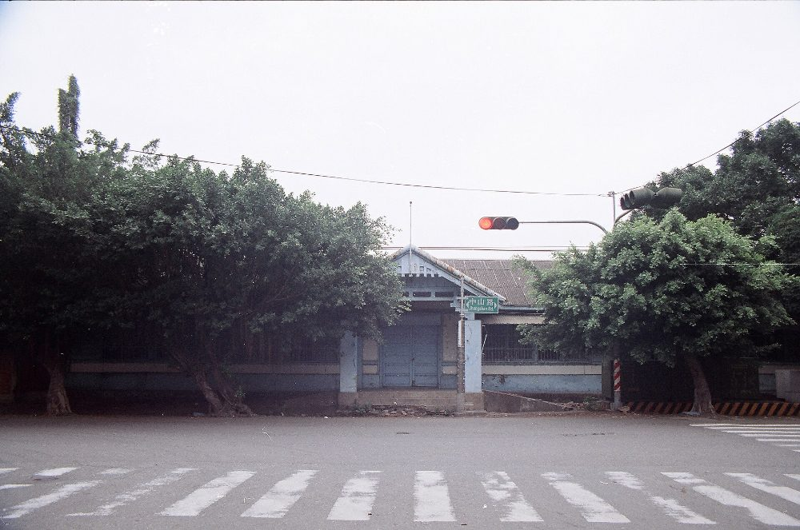
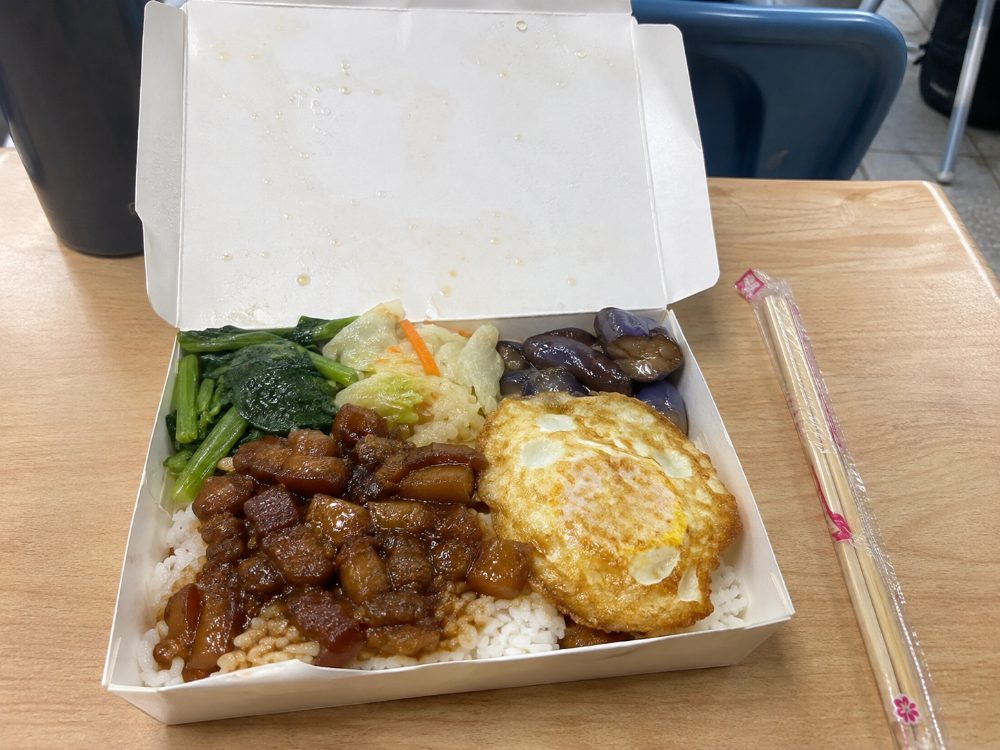

同一個 AI，給不給照片差很多gpt-5.6-luna 實測
| 只丟照片 | 附上 3 張參考照片 | |
|---|---|---|
 | ✕「看起來是合同廳舍，但我不完全確定」 | ✓虎尾驛：建築、路牌、紅磚道一致 |
 | ✕「可能是虎尾郡守官邸，但我不確定」 | ✓虎尾驛：看到「中山路」路牌 |
 | ？「不確定，可能是糖廠鐵橋」 | ✓虎尾鐵橋：鋼桁架結構相符 |
 | ✓「無法確定是哪個地標」 | ✓不認得：沒有任何地標特徵 |
4-learn · 虎科同學 · 2026-11-20 實測
| 只丟照片 | 附上 3 張參考照片 | |
|---|---|---|
| ✕「看起來是合同廳舍，但我不完全確定」 | ✓虎尾驛：建築、路牌、紅磚道一致 |
 | ✕「可能是虎尾郡守官邸，但我不確定」 | ✓虎尾驛：看到「中山路」路牌 |
| ？「不確定，可能是糖廠鐵橋」 | ✓虎尾鐵橋：鋼桁架結構相符 |
 | ✓「無法確定是哪個地標」 | ✓不認得：沒有任何地標特徵 |